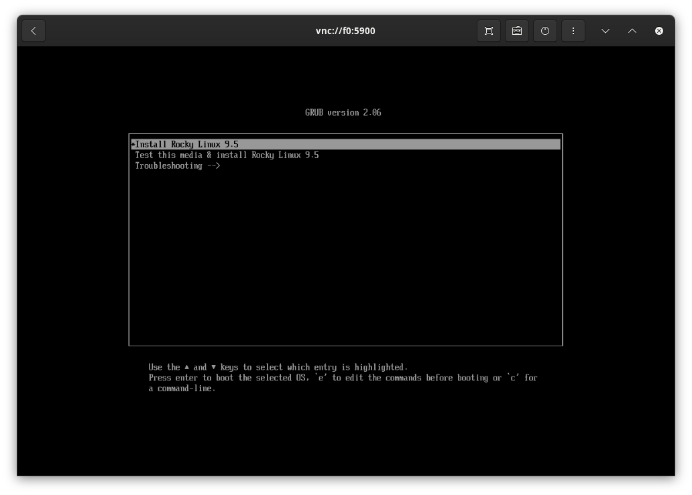
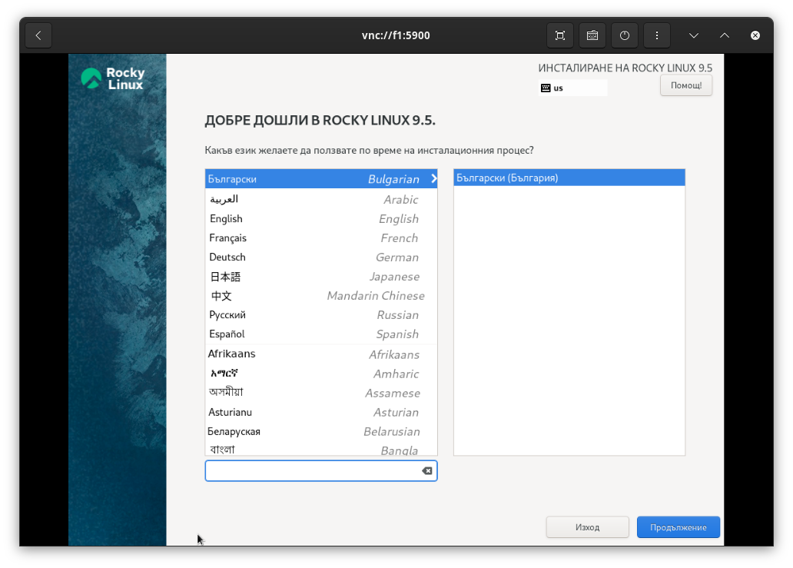
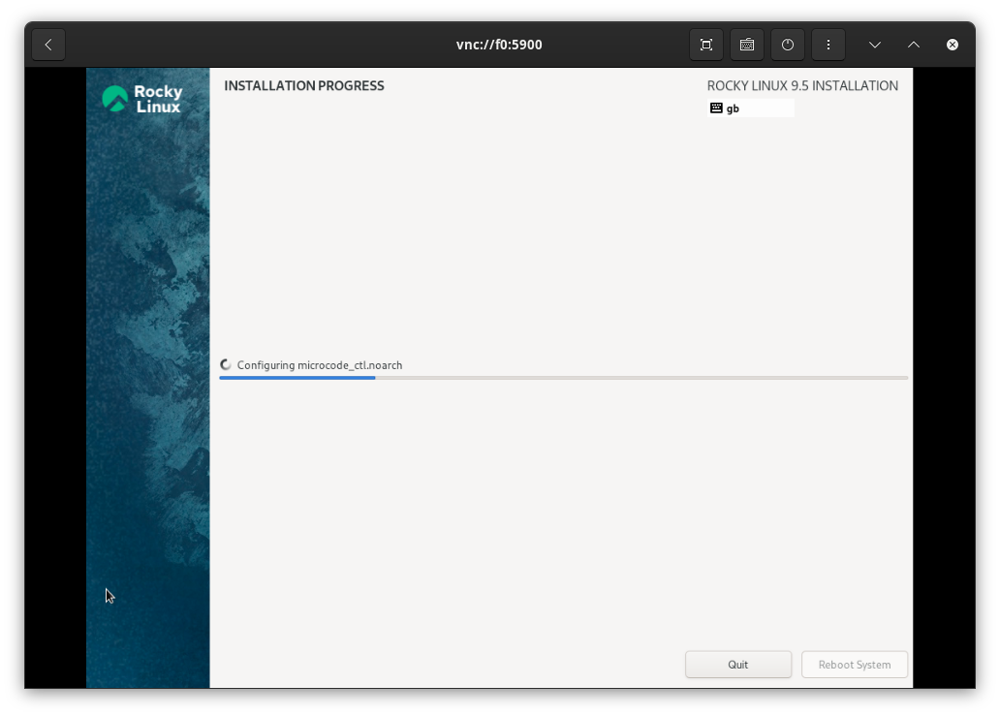
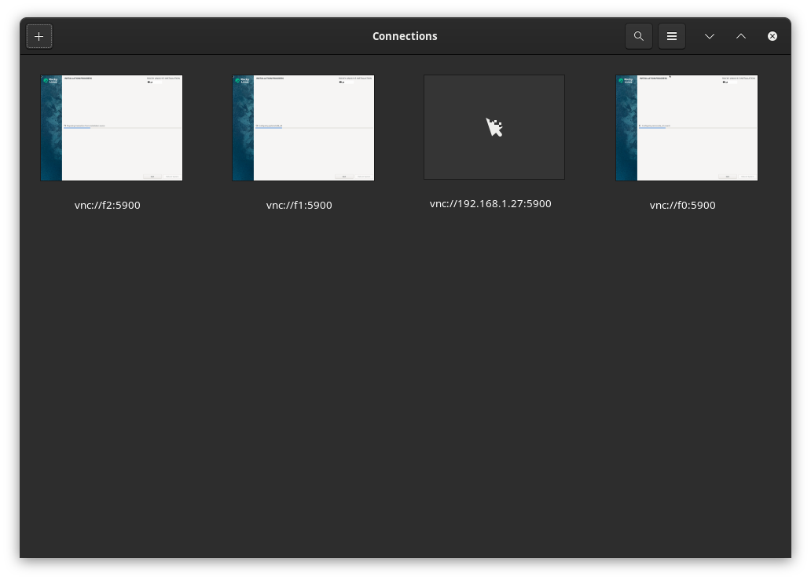

f3s: Kubernetes with FreeBSD - Part 4: Rocky Linux Bhyve VMs
Published at 2025-04-04T23:21:01+03:00
This is the fourth blog post about the f3s series for self-hosting demands in a home lab. f3s? The "f" stands for FreeBSD, and the "3s" stands for k3s, the Kubernetes distribution used on FreeBSD-based physical machines.
2024-11-17 f3s: Kubernetes with FreeBSD - Part 1: Setting the stage
2024-12-03 f3s: Kubernetes with FreeBSD - Part 2: Hardware and base installation
2025-02-01 f3s: Kubernetes with FreeBSD - Part 3: Protecting from power cuts
2025-04-05 f3s: Kubernetes with FreeBSD - Part 4: Rocky Linux Bhyve VMs (You are currently reading this)

Table of Contents
Introduction
In this blog post, we are going to install the Bhyve hypervisor.
The FreeBSD Bhyve hypervisor is a lightweight, modern hypervisor that enables virtualization on FreeBSD systems. Bhyve's strengths include its minimal overhead, which allows it to achieve near-native performance for virtual machines. It's efficient and lightweight, leveraging the capabilities of the FreeBSD operating system for performance and network management.
https://wiki.freebsd.org/bhyve
Bhyve supports running various guest operating systems, including FreeBSD, Linux, and Windows, on hardware platforms that support hardware virtualization extensions (such as Intel VT-x or AMD-V). In our case, we are going to virtualize Rocky Linux, which will later in this series be used to run k3s.
Check for POPCNT CPU support
POPCNT is a CPU instruction that counts the number of set bits (ones) in a binary number. CPU virtualization and Bhyve support for the POPCNT instruction are important because guest operating systems utilize this instruction to perform various tasks more efficiently. If the host CPU supports POPCNT, Bhyve can pass this capability to virtual machines for better performance. Without POPCNT support, some applications might not run or perform sub-optimally in virtualized environments.
To check for POPCNT support, run:
paul@f0:~ % dmesg | grep 'Features2=.*POPCNT'
Features2=0x7ffafbbf<SSE3,PCLMULQDQ,DTES64,MON,DS_CPL,VMX,EST,TM2,SSSE3,SDBG,
FMA,CX16,xTPR,PDCM,PCID,SSE4.1,SSE4.2,x2APIC,MOVBE,POPCNT,TSCDLT,AESNI,XSAVE,
OSXSAVE,AVX,F16C,RDRAND>
So it's there! All good.
Basic Bhyve setup
For managing the Bhyve VMs, we are using vm-bhyve, a tool not part of the FreeBSD operating system but available as a ready-to-use package. It eases VM management and reduces a lot of overhead. We also install the required package to make Bhyve work with the UEFI firmware.
https://github.com/churchers/vm-bhyve
The following commands are executed on all three hosts f0, f1, and f2, where re0 is the name of the Ethernet interface (which may need to be adjusted if your hardware is different):
paul@f0:~ % doas pkg install vm-bhyve bhyve-firmware
paul@f0:~ % doas sysrc vm_enable=YES
vm_enable: -> YES
paul@f0:~ % doas sysrc vm_dir=zfs:zroot/bhyve
vm_dir: -> zfs:zroot/bhyve
paul@f0:~ % doas zfs create zroot/bhyve
paul@f0:~ % doas vm init
paul@f0:~ % doas vm switch create public
paul@f0:~ % doas vm switch add public re0
Bhyve stores all it's data in the /bhyve of the zroot ZFS pool:
paul@f0:~ % zfs list | grep bhyve
zroot/bhyve 1.74M 453G 1.74M /zroot/bhyve
For convenience, we also create this symlink:
paul@f0:~ % doas ln -s /zroot/bhyve/ /bhyve
Now, Bhyve is ready to rumble, but no VMs are there yet:
paul@f0:~ % doas vm list
NAME DATASTORE LOADER CPU MEMORY VNC AUTO STATE
Rocky Linux VMs
As guest VMs I decided to use Rocky Linux.
Using Rocky Linux 9 as a VM-based OS is beneficial primarily because of its long-term support and stable release cycle. This ensures a reliable environment that receives security updates and bug fixes for an extended period, reducing the need for frequent upgrades. Rocky Linux is community-driven and aims to be fully compatible with enterprise Linux, making it a solid choice for consistency and performance in various deployment scenarios.
https://rockylinux.org/
ISO download
We're going to install the Rocky Linux from the latest minimal iso:
paul@f0:~ % doas vm iso \
https://download.rockylinux.org/pub/rocky/9/isos/x86_64/Rocky-9.5-x86_64-minimal.iso
/zroot/bhyve/.iso/Rocky-9.5-x86_64-minimal.iso 1808 MB 4780 kBps 06m28s
paul@f0:/bhyve % doas vm create rocky
VM configuration
The default Bhyve VM configuration looks like this now:
paul@f0:/bhyve/rocky % cat rocky.conf
loader="bhyveload"
cpu=1
memory=256M
network0_type="virtio-net"
network0_switch="public"
disk0_type="virtio-blk"
disk0_name="disk0.img"
uuid="1c4655ac-c828-11ef-a920-e8ff1ed71ca0"
network0_mac="58:9c:fc:0d:13:3f"
The uuid and the network0_mac differ for each of the three VMs.
But to make Rocky Linux boot it (plus some other adjustments, e.g. as we intend to run the majority of the workload in the k3s cluster running on those Linux VMs, we give them beefy specs like 4 CPU cores and 14GB RAM). So we run doas vm configure rocky and modified it to:
guest="linux"
loader="uefi"
uefi_vars="yes"
cpu=4
memory=14G
network0_type="virtio-net"
network0_switch="public"
disk0_type="virtio-blk"
disk0_name="disk0.img"
graphics="yes"
graphics_vga=io
uuid="1c45400b-c828-11ef-8871-e8ff1ed71cac"
network0_mac="58:9c:fc:0d:13:3f"
VM installation
To start the installer from the downloaded ISO, we run:
paul@f0:~ % doas vm install rocky Rocky-9.5-x86_64-minimal.iso
Starting rocky
* found guest in /zroot/bhyve/rocky
* booting...
paul@f0:/bhyve/rocky % doas vm list
NAME DATASTORE LOADER CPU MEMORY VNC AUTO STATE
rocky default uefi 4 14G 0.0.0.0:5900 No Locked (f0.lan.buetow.org)
paul@f0:/bhyve/rocky % doas sockstat -4 | grep 5900
root bhyve 6079 8 tcp4 *:5900 *:*
Port 5900 now also opens for VNC connections, so I connected it with a VNC client and ran through the installation dialogues. This could be done unattended or more automated, but there are only three VMs to install, and the automation doesn't seem worth it as we do it only once a year or less often.
Increase of the disk image
By default, the VM disk image is only 20G, which is a bit small for our purposes, so I stopped the VMs again, ran truncate on the image file to enlarge them to 100G, and re-started the installation:
paul@f0:/bhyve/rocky % doas vm stop rocky
paul@f0:/bhyve/rocky % doas truncate -s 100G disk0.img
paul@f0:/bhyve/rocky % doas vm install rocky Rocky-9.5-x86_64-minimal.iso
Connect to VNC
For the installation, I opened the VNC client on my Fedora laptop (GNOME comes with a simple VNC client) and manually ran through the base installation for each of the VMs. Again, I am sure this could have been automated a bit more, but there were just three VMs, and it wasn't worth the effort. The three VNC addresses of the VMs were vnc://f0:5900, vnc://f1:5900, and vnc://f0:5900.


I primarily selected the default settings (auto partitioning on the 100GB drive and a root user password). After the installation, the VMs were rebooted.


After install
We perform the following steps for all 3 VMs. In the following, the examples are all executed on f0 (the VM r0 running on f0):
VM auto-start after host reboot
To automatically start the VM on the servers, we add the following to the rc.conf on the FreeBSD hosts:
paul@f0:/bhyve/rocky % cat <<END | doas tee -a /etc/rc.conf
vm_list="rocky"
vm_delay="5"
The vm_delay isn't really required. It is used to wait 5 seconds before starting each VM, but there is currently only one VM per host. Maybe later, when there are more, this will be useful. After adding, there's now a Yes indicator in the AUTO column.
paul@f0:~ % doas vm list
NAME DATASTORE LOADER CPU MEMORY VNC AUTO STATE
rocky default uefi 4 14G 0.0.0.0:5900 Yes [1] Running (2063)
Static IP configuration
After that, we change the network configuration of the VMs to be static (from DHCP) here. As per the previous post of this series, the 3 FreeBSD hosts were already in my /etc/hosts file:
192.168.1.130 f0 f0.lan f0.lan.buetow.org
192.168.1.131 f1 f1.lan f1.lan.buetow.org
192.168.1.132 f2 f2.lan f2.lan.buetow.org
For the Rocky VMs, we add those to the FreeBSD host systems as well:
paul@f0:/bhyve/rocky % cat <<END | doas tee -a /etc/hosts
192.168.1.120 r0 r0.lan r0.lan.buetow.org
192.168.1.121 r1 r1.lan r1.lan.buetow.org
192.168.1.122 r2 r2.lan r2.lan.buetow.org
END
And we configure the IPs accordingly on the VMs themselves by opening a root shell via RDP to the VMs and entering the following commands on each of the VMs:
[root@r0 ~] % dnmcli connection modify enp0s5 ipv4.address 192.168.1.120/24
[root@r0 ~] % dnmcli connection modify enp0s5 ipv4.gateway 192.168.1.1
[root@r0 ~] % dnmcli connection modify enp0s5 ipv4.DNS 192.168.1.1
[root@r0 ~] % dnmcli connection modify enp0s5 ipv4.method manual
[root@r0 ~] % dnmcli connection down enp0s5
[root@r0 ~] % dnmcli connection up enp0s5
[root@r0 ~] % hostnamectl set-hostname r0.lan.buetow.org
[root@r0 ~] % cat <<END >>/etc/hosts
192.168.1.120 r0 r0.lan r0.lan.buetow.org
192.168.1.121 r1 r1.lan r1.lan.buetow.org
192.168.1.122 r2 r2.lan r2.lan.buetow.org
END
Whereas:
- 192.168.1.120 is the IP of the VM itself (here: r0.lan.buetow.org)
- 192.168.1.1 is the address of my home router, which also does DNS.
Permitting root login
As these VMs aren't directly reachable via SSH from the internet, we enable root login by adding a line with PermitRootLogin yes to /etc/sshd/sshd_config.
Once done, we reboot the VM by running reboot inside the VM to test whether everything was configured and persisted correctly.
After reboot, I copied my public key from my Laptop to the 3 VMs:
% for i in 0 1 2; do ssh-copy-id root@r$i.lan.buetow.org; done
Then, I edited the /etc/ssh/sshd_config file again on all 3 VMs and configured PasswordAuthentication no to only allow SSH key authentication from now on.
Install latest updates
[root@r0 ~] % dnf update
[root@r0 ~] % reboot
Stress testing CPU
The aim is to prove that bhyve VMs are CPU efficient. As I could not find an off-the-shelf benchmarking tool available in the same version for FreeBSD as well as for Rocky Linux 9, I wrote my own silly CPU benchmarking tool in Go:
package main
import "testing"
func BenchmarkCPUSilly1(b *testing.B) {
for i := 0; i < b.N; i++ {
_ = i * i
}
}
func BenchmarkCPUSilly2(b *testing.B) {
var sillyResult float64
for i := 0; i < b.N; i++ {
sillyResult += float64(i)
sillyResult *= float64(i)
divisor := float64(i) + 1
if divisor > 0 {
sillyResult /= divisor
}
}
_ = sillyResult // to avoid compiler optimization
}
You can find the repository here:
https://codeberg.org/snonux/sillybench
Silly FreeBSD host benchmark
To install it on FreeBSD, we run:
paul@f0:~ % doas pkg install git go
paul@f0:~ % mkdir ~/git && cd ~/git && \
git clone https://codeberg.org/snonux/sillybench && \
cd sillybench
And to run it:
paul@f0:~/git/sillybench % go version
go version go1.24.1 freebsd/amd64
paul@f0:~/git/sillybench % go test -bench=.
goos: freebsd
goarch: amd64
pkg: codeberg.org/snonux/sillybench
cpu: Intel(R) N100
BenchmarkCPUSilly1-4 1000000000 0.4022 ns/op
BenchmarkCPUSilly2-4 1000000000 0.4027 ns/op
PASS
ok codeberg.org/snonux/sillybench 0.891s
Silly Rocky Linux VM @ Bhyve benchmark
OK, let's compare this with the Rocky Linux VM running on Bhyve:
[root@r0 ~]# dnf install golang git
[root@r0 ~]# mkdir ~/git && cd ~/git && \
git clone https://codeberg.org/snonux/sillybench && \
cd sillybench
And to run it:
[root@r0 sillybench]# go version
go version go1.22.9 (Red Hat 1.22.9-2.el9_5) linux/amd64
[root@r0 sillybench]# go test -bench=.
goos: linux
goarch: amd64
pkg: codeberg.org/snonux/sillybench
cpu: Intel(R) N100
BenchmarkCPUSilly1-4 1000000000 0.4347 ns/op
BenchmarkCPUSilly2-4 1000000000 0.4345 ns/op
The Linux benchmark is slightly slower than the FreeBSD one. The Go version is also a bit older. I tried the same with the up-to-date version of Go (1.24.x) with similar results. There could be a slight Bhyve overhead, or FreeBSD is just slightly more efficient in this benchmark. Overall, this shows that Bhyve performs excellently.
Silly FreeBSD VM @ Bhyve benchmark
But as I am curious and don't want to compare apples with bananas, I decided to install a FreeBSD Bhyve VM to run the same silly benchmark in it. I am not going through the details of how to install a FreeBSD Bhyve VM here; you can easily look it up in the documentation.
But here are the results running the same silly benchmark in a FreeBSD Bhyve VM with the same FreeBSD and Go versions as the host system (I have the VM 4 vCPUs and 14GB of RAM; the benchmark won't use as many CPUs anyway):
root@freebsd:~/git/sillybench # go test -bench=.
goos: freebsd
goarch: amd64
pkg: codeberg.org/snonux/sillybench
cpu: Intel(R) N100
BenchmarkCPUSilly1 1000000000 0.4273 ns/op
BenchmarkCPUSilly2 1000000000 0.4286 ns/op
PASS
ok codeberg.org/snonux/sillybench 0.949s
It's a bit better than Linux! I am sure that this is not really a scientific benchmark, so take the results with a grain of salt!
Benchmarking with ubench
Let's run another, more sophisticated benchmark using ubench, the Unix Benchmark Utility available for FreeBSD. It was installed by simply running doas pkg install ubench. It can benchmark CPU and memory performance. Here, we limit it to one CPU for the first run with -s, and then let it run at full speed in the second run.
FreeBSD host ubench benchmark
Single CPU:
paul@f0:~ % doas ubench -s 1
Unix Benchmark Utility v.0.3
Copyright (C) July, 1999 PhysTech, Inc.
Author: Sergei Viznyuk <sv@phystech.com>
http://www.phystech.com/download/ubench.html
FreeBSD 14.2-RELEASE-p1 FreeBSD 14.2-RELEASE-p1 GENERIC amd64
Ubench Single CPU: 671010 (0.40s)
Ubench Single MEM: 1705237 (0.48s)
-----------------------------------
Ubench Single AVG: 1188123
All CPUs (with all Bhyve VMs stopped):
paul@f0:~ % doas ubench
Unix Benchmark Utility v.0.3
Copyright (C) July, 1999 PhysTech, Inc.
Author: Sergei Viznyuk <sv@phystech.com>
http://www.phystech.com/download/ubench.html
FreeBSD 14.2-RELEASE-p1 FreeBSD 14.2-RELEASE-p1 GENERIC amd64
Ubench CPU: 2660220
Ubench MEM: 3095182
--------------------
Ubench AVG: 2877701
FreeBSD VM @ Bhyve ubench benchmark
Single CPU:
root@freebsd:~ # ubench -s 1
Unix Benchmark Utility v.0.3
Copyright (C) July, 1999 PhysTech, Inc.
Author: Sergei Viznyuk <sv@phystech.com>
http://www.phystech.com/download/ubench.html
FreeBSD 14.2-RELEASE-p1 FreeBSD 14.2-RELEASE-p1 GENERIC amd64
Ubench Single CPU: 672792 (0.40s)
Ubench Single MEM: 852757 (0.48s)
-----------------------------------
Ubench Single AVG: 762774
All CPUs:
root@freebsd:~ # ubench
Unix Benchmark Utility v.0.3
Copyright (C) July, 1999 PhysTech, Inc.
Author: Sergei Viznyuk <sv@phystech.com>
http://www.phystech.com/download/ubench.html
FreeBSD 14.2-RELEASE-p1 FreeBSD 14.2-RELEASE-p1 GENERIC amd64
Ubench CPU: 2652857
swap_pager: out of swap space
swp_pager_getswapspace(27): failed
swap_pager: out of swap space
swp_pager_getswapspace(18): failed
Apr 4 23:02:43 freebsd kernel: pid 862 (ubench), jid 0, uid 0, was killed: failed to reclaim memory
swp_pager_getswapspace(6): failed
Apr 4 23:02:46 freebsd kernel: pid 863 (ubench), jid 0, uid 0, was killed: failed to reclaim memory
Apr 4 23:02:47 freebsd kernel: pid 864 (ubench), jid 0, uid 0, was killed: failed to reclaim memory
Apr 4 23:02:48 freebsd kernel: pid 865 (ubench), jid 0, uid 0, was killed: failed to reclaim memory
Apr 4 23:02:49 freebsd kernel: pid 861 (ubench), jid 0, uid 0, was killed: failed to reclaim memory
Apr 4 23:02:51 freebsd kernel: pid 839 (ubench), jid 0, uid 0, was killed: failed to reclaim memory
The multi-CPU benchmark in the Bhyve VM ran with almost identical results to the FreeBSD host system. However, the memory benchmark failed with out-of-swap space errors. I am unsure why, as the VM has 14GB RAM, but I am not investigating further.
Also, during the benchmark, I noticed the bhyve process on the host was constantly using 399% of the CPU (all 4 CPUs).
PID USERNAME THR PRI NICE SIZE RES STATE C TIME WCPU COMMAND
7449 root 14 20 0 14G 78M kqread 2 2:12 399.81% bhyve
Overall, Bhyve has a small overhead, but the CPU performance difference is negligible. The FreeBSD host is slightly faster than the FreeBSD VM running on Bhyve, but the difference is small enough for our use cases. The memory benchmark seems slightly off, but I don't know whether to trust it. Do you have an idea?
Rocky Linux VM @ Bhyve ubench benchmark
Unfortunately, I wasn't able to find ubench in any of the Rocky Linux repositories. So, I skipped this test.
Conclusion
Having Linux VMs running inside FreeBSD's Bhyve is a solid move for future F3s hosting in my home lab. Bhyve provides a reliable way to manage VMs without much hassle. With Linux VMs, I can tap into all the cool stuff (e.g., Kubernetes) in the Linux world while keeping the steady reliability of FreeBSD.
Future uses (out of scope for this blog series) would be additional VMs for different workloads. For example, how about a Windows or NetBSD VM to tinker with?
This flexibility is great for keeping options open and managing different workloads without overcomplicating things. Overall, it's a nice setup for getting the most out of my hardware and keeping things running smoothly.
See you in the next blog post of this series. Maybe we will be installing highly available storage with HAST or we start setting up k3s on the Rocky Linux VMs.
Other *BSD-related posts:
2025-04-05 f3s: Kubernetes with FreeBSD - Part 4: Rocky Linux Bhyve VMs (You are currently reading this)
2025-02-01 f3s: Kubernetes with FreeBSD - Part 3: Protecting from power cuts
2024-12-03 f3s: Kubernetes with FreeBSD - Part 2: Hardware and base installation
2024-11-17 f3s: Kubernetes with FreeBSD - Part 1: Setting the stage
2024-04-01 KISS high-availability with OpenBSD
2024-01-13 One reason why I love OpenBSD
2022-10-30 Installing DTail on OpenBSD
2022-07-30 Let's Encrypt with OpenBSD and Rex
2016-04-09 Jails and ZFS with Puppet on FreeBSD
E-Mail your comments to paul@nospam.buetow.org
Back to the main site